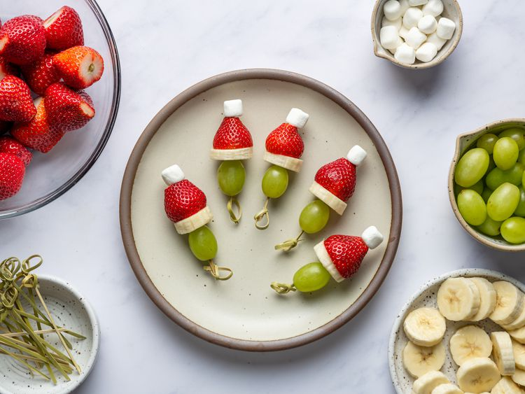

Grinch Kabobs!

Fun and simple fruit skewers for your Christmas party!
Ingredients
- 24 Green Grapes
- 1 Large Banana cut into small slices
- 24 Hulled Strawberries tips removed
- 24 Miniature Marshmallows
- 24 Toothpicks
Steps
- Gather all ingredients.
- Thread 1 grape, 1 banana slice, 1 strawberry and 1 marshmellow onto 1 toothpick to resemble the Grinch's head in his red hat.
- Repeat the process with remaining ingredients
- Serve and enjoy!